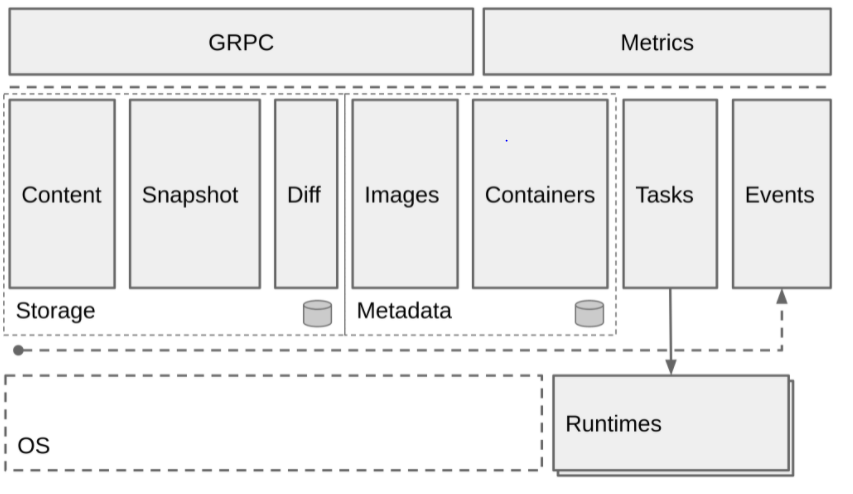
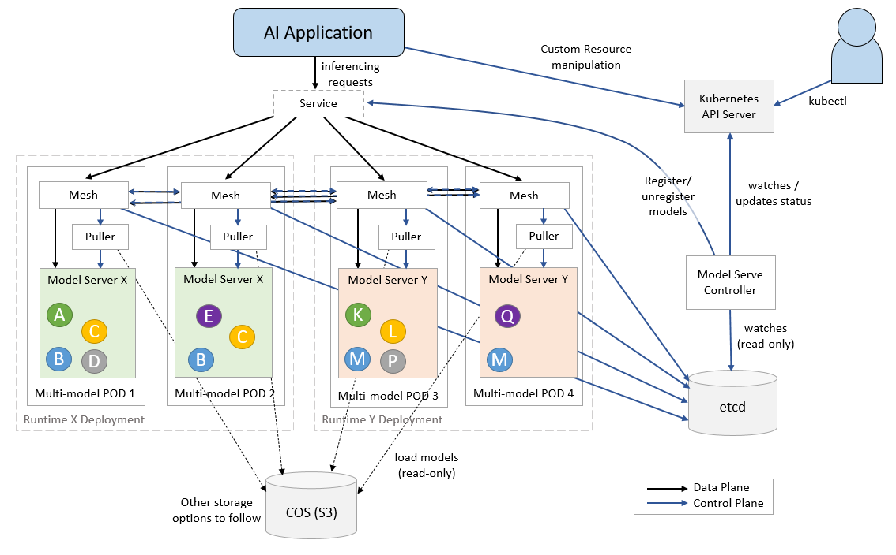
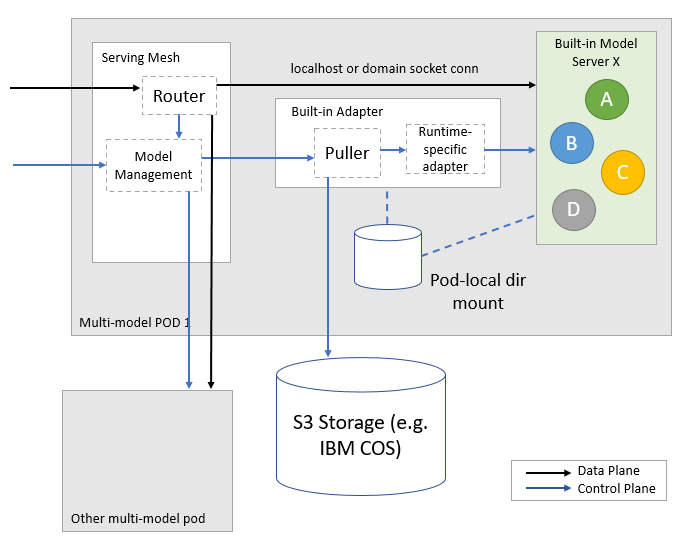

New Post
2025-12-31
容器知识备忘录
2021-12-05
Model_Mesh_Serving
Linux Container
一份容器知识备忘录
Linux Namespace
Linux Namespace 是什么？
- UTS：隔离不同的机器名、域名
- IPC：隔离 linux 消息队列
- PID：隔离进程可见性（pid）
- Mount：隔离挂载点
- User：隔离用户以及用户组
- Network：隔离网络（网络虚拟化）
基于namespace，docker 就可以达到看起来像是独立于宿主机之外的效果
怎么使用 Namespace？
系统调用：
- clone 创建新进程时，根据调用参数来创建该进程的namesapce，并且它的子进程也会包含在 namespace 中
- unshare 将进程移除某个 namespace
- setns 将进程加入某个 namespace
Linux Cgroup
Linux Cgroup 是什么？
什么是Cgroup？
- subsystem 是各种控制模块
- blkio：控制进程对硬盘的访问（例如输入/输出大小限制）
- cpu：设置进程的cpu调度策略
- cpuset：控制进程使用的多核cpu（所谓的 绑核）
- devices：控制进程能够访问的设备
- freezer：令进程挂起以及恢复
- memory：控制进程访问内存
- net_cls：网络包分类，以便 Linux tc (traffic controller ）可以根据分类区分出来自某个 cgroup 的包并做限流或监控
- net_prio：控制进程的网络流量优先级
- ns：它的作用是使 cgroup 中的进程在新的 Namespace fork新进 程 （NEWNS ）时，创建出 个新的cgroup ，这个 cgroup 包含新的 Namespace的进程
- cgroup：一个cgroup包含一组进程，通过subsystem与cgroup的关联，将这些进程与subsystem关联
- hierarchy：将一组cgroup组成树状结构，通过这种结构，cgroup 可以继承父节点cgroup的subsystem属性
基于 Cgroup，docker 可以达到控制进程资源的效果。
怎么使用 Cgroup？
- Linux中 cgroup 以文件系统的方式暴露给用户，例如
mount -t cgroup cgroup ./cgroup_test/ - 系统自带的 Cgroup 路径
/sys/fs/cgroup
UnionFS
UnionFS 是什么？
UnionFS是一类文件系统的统称，它可以将多个文件系统，视为同一个文件系统的不同branch，从而实现将不同目录的文件全部挂载到同一个目录上。什么意思？举个例子，有个目录是下面的结构
data/
├── mongo
└── mysql
我有另外一个目录是这样的结构
data/
├── protoc
└── golang
通过UnionFS可以将两个文件系统都挂在同一个目录下：
data/
├── mongo
├── mysql
├── protoc
└── golang
当然以上是一种只读场景，当发生写入时，UnionFS使用了一种CoW的技术（copy-on-write 写时复制）。
值得一提的是，系统调用中的 Fork 函数也使用了CoW的思想，fork 出子进程后，子进程的内存物理空间与父进程保持一致，直到子进程开始真正的修改时，才会复制对应的内存页
当我们对一个文件进行写入时，我们并没有更改原来的文件，而是新增了一个 branch，在这个新的branch中，UnionFS会把原来的文件copy过来，并新增需要写入的内容。
通过这种方式，可以同时使用只读和可读写的文件系统，并且可以保持一定的低开销。两种常见的UnionFS的实现是AUFS和OverlayFS
基于UnionFS，Docker 可以实现镜像分层（layer）以及镜像文件的重复利用
怎么使用 UnionFS ？
使用系统调用 mount，以aufs为例：
mount -t aufs -o dirs=/read-write-layer:/read-only-layer-1:/read-only-layer-2 none /mnt-dir
如何设置读写权限？左边第一个目录是 read-write 权限，其他的都是 read-only的
解析 docker 的各种操作
解析 docker run 发生了什么？
如何产生子进程
- fork 进程，同时创建新的 namespace，并开始 wait 子进程
- fork 出的进程会调用自身（也就是 /proc/self/exe，这个路径会短链到当前的可执行文件），并在arg参中数增加 init 命令
- init 命令会 exec 一个新的进程（注意exec 与fork 不同，exec 产生的子进程会完全替换当前的进程，包括数据、堆栈、PID等信息）
- exec 产生的进程会执行
mount proc，并执行用户指定的 command 命令
继续丰富上面过程中的细节，对子进程进行资源限制：
- 执行 docker run，fork 子进程
- 根据用户参数，创建 Cgroup
- cpu：写入cpu.shares文件
- cpuset：写入cpuset.cpus
- memory：写入memory.limit_in_bytes
- 将子进程 pid 加入到创建 cgroup 中
- wait 子进程
继续丰富上面过程中的细节，通过管道向子进程传递参数：
- 执行 docker run，fork 子进程
- 创建一个 pipe
- 将pipe的读取段，作为一个fd添加到子进程中
- 父进程在pipe写入端，写入数据
- 子进程读取 3号 fd
- 父进程 wait 子进程
docker 镜像是什么？怎么使用？
镜像文件里有什么？
-
manifest.json： 关于这个镜像包的一些配置，比如说镜像有哪几个 layer
-
- Config 文件：关于镜像本身的一些配置，比说 ENV，Entrypoint， Cmd
-
layer：layer 一般是一个tar包，几个 layer 共同叠加之后组成一个 root 文件系统
以 busybox 为例：
它的 manifest.json:
[
{
"Config": "d23834f29b3875b6759be00a48013ba523c6a89fcbaeaa63607512118a9c4c19.json",
"RepoTags": [
"busybox:latest"
],
"Layers": [
"2a7f8eb07ab44ffd8e11d364e8b7ad18f69df5f29e2e2eb13695e6b01fbb4f77/layer.tar"
]
}
]
把它的layer解压之后得到目录:
total 48
drwxr-xr-x 2 lubingtan lubingtan 12288 Nov 30 02:55 bin
drwxr-xr-x 4 lubingtan lubingtan 4096 Dec 5 12:47 dev
drwxr-xr-x 3 lubingtan lubingtan 4096 Dec 5 12:47 etc
drwxr-xr-x 2 lubingtan lubingtan 4096 Nov 30 02:55 home
drwxr-xr-x 2 lubingtan lubingtan 4096 Dec 5 12:47 proc
drwx------ 2 lubingtan lubingtan 4096 Nov 30 02:55 root
drwxr-xr-x 2 lubingtan lubingtan 4096 Dec 5 12:47 sys
drwxrwxr-x 2 lubingtan lubingtan 4096 Nov 30 02:55 tmp
drwxr-xr-x 3 lubingtan lubingtan 4096 Nov 30 02:55 usr
drwxr-xr-x 4 lubingtan lubingtan 4096 Nov 30 02:55 var
怎么使用镜像？
使用镜像时怎么把读写 layer 分开？
- 会新建一个 read-write 的 layer 以及一个 read-only 的 layer
- 这里 read-only 的 layer是用来存储启动容器时传入的系统信息
- 把所有镜像的 layer 以及刚刚的两个 layer mount 到一个目录下，把这个目录作为容器的 root 目录
容器启动时怎么使用新的 root 文件系统？
- 系统调用 pivot_root 可以改变整个系统的 root 文件系统，从而移除对老 root 的依赖。
- 系统调用 chroot 是针对某个进程，其他进程还是老的 root
- docker 会使用 pivot_root ，umouont 掉原来的 root
这样就可以在容器内看到镜像的文件系统了。
整个流程：
- 创建只读层
- 创建容器读写层
- 创建挂载点
- 将挂载点作为容器的root
容器退出的时
- 卸载挂载点
- 删除挂载点
- 删除除读写层
解析 docker stop、logs、delete
Stop：
- 查找主进程 PID
- 发送 SIGTERM 信号 （kill -15）
- 等待进程结束，如果一直不结束，发送 SIGKILL （kill -9）
- 修改容器信息，写入存储容器信息的文件
Delete：
- 根据容器名查找容器信息。
- 判断容器是否处于停止状态。
- 查找容器存储信息的地址。
- 移除记录容器信息的文件。
Logs：
- 把stdout、stderr重定向到一个日志文件
- 找到容器对应的文件，输出。
解析 docker commit
- 容器的进程会被 pause
- 重新打包当前的 root 文件系统
解析 docker exec
- 使用了一个系统调用
setns能够进入目标进程的 namespace
Linux 网络虚拟化
Linux 网络虚拟化以及独赢的容器网络是有很多种形式的，在书中只介绍了 veth + bridge 这中容器网络方案。
Veth是什么？
- veth 可以理解为虚拟网卡，它是成对出现的，即一个发送端、一个接收端，它可以用来连接不同 network namespace
- 如何操作：
# 创建 network namespace
ip netns add ns1
ip netns add ns2
# 创建一对 veth
ip link add veth0 type veth peer name veth1
# 把两个 veth 添加到两个 namespace 中
ip link set veth0 netns ns1
ip link set veth1 netns ns2
# 查看 ns1 的网络设备
ip netns exec ns1 ip link
# 配置 veth 的ip, 以及 namespace 的路由
ip netns exec ns1 ifconfig veth0 172.17.0.2/24 up
ip netns exec ns1 route add default dev veth0
ip netns exec ns2 ifconfig veth1 172.17.0.3/24 up
ip netns exec ns2 route add default dev veth1
# 对 veth 设备进行 ping
ip netns exec ns1 ping -c 1 172.18.0.3
bridge 是什么？
- bridge 相当于一个虚拟的交换机，可以连接不同的网络设备。通过 bridge 可以连接 namespace 中的网络设备和宿主机上的网络。
# 创建 namespace 以及 veth
ip netns add ns1
ip link add veth0 type veth peer name veth1
# 将其中一个移到 ns1
ip link set veth1 setns ns1
# 创建网桥
brctl addbr br0
# 挂载网络设备
brctl addif br0 eth0
brctl addif br0 veth0
路由表是什么？
- 路由表是内核中的一个模块，通过定义路由表来决定在某个 namespace 中包的流向
# 启动虚拟网络设备, 并设置 veth 在 ns 中的IP
ip link set veth0 up
ip link set br0 up
ip netns exec ns1 ifconfig veth1 172.18.0.2/24
# 设置 ns1 网络空间的路由和宿主机上的路由
# default 代表 0.0.0.0/0, 即在 net namespace 中所有的流量都经过 veth1
ip netns exec ns1 route add default dev veth1
# 在宿主机上, 将流向 172.18.0.2/24 网段的请求, 全部路由到 br0 上ss
route add -net 172.18.0.2/24 dev br0
# 从 ns 访问宿主机
ip netns exec ns1 ping -c 10.0.2.15
# 宿主机访问 ns
ping -c 172.18.0.2
Iptables 是什么？
iptables 是对内核中的 netfilter 模块进行操作的工具，可以用来管理流量包的流动和传送，通过不同的策略对包进行加工、传送或丢弃。例如：
- MASQUERADE 策略：将请求包的源地址换成一个网络设备的地址。这个用到的场景是，ns 中的请求包到达宿主机外部后，不知道如何访问这个请求包的源地址。如果使用这个策略将源地址替换，就可以找到宿主机了。
- DNAT 策略：可以将 ns 内部的端口映射到宿主机端口，这样外部请求到达时，就可以访问ns中的网络了。
Docker 的容器网络
golang 中如何实现
- net 库
- netlink 库
- netns 库
Docker 对于容器网络的抽象
- 网络：是容器的集合，在这个网络上的容器可以通过这个网络互相通信，就像挂载到同一个 Linux Bridge 设备上的网络设备一样。网络中会包括这个网络相关的配置，比如网络的容器地址段、网络操作所调用的网络驱动等信息。
- 网络端点：连接容器与网络，凹征容器内部与网络的通信。例如Veth设备，一端挂在容器内部，一端挂在 Bridge 上，就能保证容器和网络的通信。网络端点中包括连接到网络的一些信息，比如地址、Veth 设备、端口映射、连接的容器和网络等信息。
- 网络驱动：网络功能中的组件，不同驱动代表者对网络创建、连接、销毁的不同策略。创建网络时指定不同的网络驱动来定义如何做网络的配置。
- IPAM：也是网络功能中的组件，用于网络 IP 地址的分配和释放，包括容器的 IP 地址和网络网关的 IP 地址。它的功能时从指定的 subnet 网段中分配 IP 地址，以及释放 IP 地址。
如何分配IP？
- 基于 bitmap 算法：把一段 ip 是否已经分配的状态，保存在一段二进制数字中（已分配为 1，未分配为 0）
- 分配 ip 时把 ip 地址的信息记录到文件中
如何创建网络？
创建网络：
- 输入网络的网段、网关以及网络的名字
- 创建 bridge 设备
- 设置 bridge 设备的地址和路由
- 启动 bridge 设备
- 设置 iptabels 的 SNAT 规则
删除网络：
- 删除 bridge 设备
如何把容器连上网络？
- 创建 veth
- 挂载一端到 bridge 上
- 挂载另一端到 network ns 中
- 设置另一端的 ip
- 设置 network ns 中的路由
- 设置端口映射
如何容器之间跨主机通信？
- 通过一致性 kv-store 分配 ip
- 通过封包或者路由实现跨主机通信
- 封包：将请求包封装成宿主机直接的通信包，在宿主机解包后再发送到对应的容器
- vxlan
- gre
- 路由：让宿主机网络知道容器的地址要怎么路由，需要网络设备的支持
- 路由器路由表
- Vlan
- VPC路由表
- macvlan：一块物理网卡虚拟成多块虚拟网卡
- 封包：将请求包封装成宿主机直接的通信包，在宿主机解包后再发送到对应的容器
业界主流技术栈
runC
runc 的目标是，构造到处都可以运行的标准容器
- 由docker 的子项目 libcontainer 发展而来，托管于OCI（open container Initiative，2015年成立的组织）
- 完全支持 Linux Namespace
- 支持所有 Linux 所有原生安全特性（Selinux、prvot_root、capability等等）
- 支持容器热迁移（CRIU项目）
- 正式的容器标准以及实现
- OCI 标准
- rootfs 一个文件夹， 代表容器的 root 文件系统
- config.json 包括容纳容器的配置数据
容器配置里有什么？
- mounts：挂载点，源设备名或者文件名，目标挂载路径，等等
- process：比如工作目录，环境变量，启动命令，资源使用量等等。
- user：容器内的用户信息
- platform：容器运行的系统信息
- hook 钩子
- prestart：在容器启动之后、用户进程启动之前执行，可以配置一些容器初始化环境。
- 典型的例如，nvidia container runtime，它在 runc 之上包了一层，把一个 prestart hook 传递给runc，这个 prestart hook 其实是一个叫做 nvidia-container-toolkit 的 cli 程序，这个cli 调用了 libnvidia-contaiener 来做一些初始化环境的工作。
- poststart：在用户进程启动之后执行，例如提醒用户容器已经起来了。
- poststop：在容器进行停止后执行，可以用来做一些清理工作。
- prestart：在容器启动之后、用户进程启动之前执行，可以配置一些容器初始化环境。
runc 是怎么创建容器的？
- 读取配置文件
- 设置 rootfs
- 使用factory 创建容器（不同系统不同的实现）
- 创建初始化进程
- 设置容器的输出管道
- 启动 container.Start 启动物理的容器
- 回调 init 方法重新初始化容器进程
- runC 父进程等待子进程，结束后退出
OCI 标准还有什么东西？
image-spec：定义了镜像保存的格式
distribution-spec：定义了镜像仓库的接口
Docker containerd
- 作为 daemon 程序（守护进程）运行在 Linux 上，管理机器上所有容器的生命周期
- 从 docker 项目中独立出来的，向更上层的平台暴露 gRPC API，例如 Swram、Kubernetes、Mesos等等
- containerd 负责一台机器的 镜像操作（pull / push）、容器操作（start / stop）、网络以及存储，不过对于容器具体的运行是由 runC 负责
- 支持 OCI 运行时
- 支持镜像 pull / push
- 容器运行时生命周期管理
- 网络操作原语
- 存储
Containerd 的架构：

containerd 和 docker 之间的关系？
- docker 包含 containerd，除了containerd 的 功能之外，docker 还可以完成镜像构建的功能，以及 docker client 提供的 cli 工具
containerd和 OCI、runc 之间的关系？
OCI 个标准化的容器规范，包括运行时规范和镜像规范 rune 是基于此规范的参考实现， Docker 贡献了 runc 主要代码。
从技术枝上看 containerd 比 runc 的层次更高， containerd 可以使用 runc 启动容器，还可以下载镜像，管理网络。
CRI 以及 shim 层
CRI 是 k8s（容器编排）这个项目定义的一组接口，可以让 kubelet 通过 CRI 接口进行容器操作。
CRI 的接口定义有哪些？
CRI 的核心概念：PodSandbox 和 Container：
- pod 由一组 Container 构成，这些容器贡献相同的环境与资源，这个共同的环境被称为 PodSandbox
- 不同的实现可以由不同的 PodSandbox，比如 docker 可以实现成一个 namespace，Hypervisor 可以实现成一个虚拟机。
定义：cri-api/api.proto at master · kubernetes/cri-api
- RuntimeService：Pod 、容器以及日志的操作
- ImageService：镜像的操作（不包括 build）
使用 CRI 有什么好处？
- 解耦了 Pod 的实现与接口，开发 shim 时不需要了解 kubelet
- 有利于 kubelet 的扩展
CRI 的目的在于：
- 提升 Kubernetes 可扩展性，让更多的容器运行时更容易集成到 Kubernetes 中。
- 提升 Pod Feature 的更新迭代效率。
- 构建易于维护的代码体系。
CRI 不会做以下5件事。
-
建议如何与新的容器运行时集成，例如决定 Container Shim 应该在哪里实现。
-
提供新接口的版本管理。
-
提供 Windows container 支持。本接口不会在 Windows container 支持方面花费太多，但会尽量做到更加易于扩展来让 Windows container 特性更容易被添加进来。
-
重新定义 Kubelet 的内部运行时相关接口。尽管会增加 Kubelet 可维护性，但这不是 CRI 的工作。
-
提升 Kubelet 效率和性能。
Model Mesh Serving: 一种可以大规模部署ML模型的解决方案
What Is Model Mesh Serving
背景: Inference Service in MLOps
作为一个算法工程师/Data scientist, 往往希望在训练结束后, 能够快速的把模型部署在服务器中, 这样就能让模型很方便的接收外部请求并返回预测结果.
基于这种需求, Tensorflow Serving, TorchServe, Triton Inference Server, ONNX Runtime Server 等各种 model inference server 开始出现.
不过随着技术以及业务规模的发展, 我们的需求也变得更多, 我们不仅希望把模型部署在服务器上, 更希望能够非常简单的集成日志/监控/服务发现/负载均衡等功能, 以及能够非常方便的进行金丝雀发布/滚动更新等各种运维操作.
这里有两种思路:
-
第一种思路就是, 把 model server 当作是一种普通的后端服务:
在这种方案中, AI 工程师需要了解大量和以上功能相关的知识, 或者也可以将模型交付给后端工程师. 然而不管那种方式, 显然都增加了大量的时间以及沟通成本. 并且公司内不同的团队使用不同的框架/接口协议, 这些都会造成额外的接入成本.
-
另一种思路是, 把 model server 当作一种特殊的后端服务:
由 AI 工程师以及后端工程师共同组成一支团队, 建设一个专门用于模型部署的平台. 对于所有模型都以一种标准化的方式进行管理, 并且提供一系列工具对于模型的部署/更新/优化等操作进行封装及简化. 利用这些平台工具, 不同团队的AI工程师都可以非常方便的对于模型进行发布. 这样就可以大大较少模型交付以及迭代的成本.
基于第二种思路, 当前已经出现了一些可用于构建推理平台的开源项目, 例如 kfserving (已经改名为 kserve, 并从 kubeflow 独立出来), Seldon Core.
关于这些方案, 具体细节这里就不再赘述了, 感兴趣的同学可以到 github 上进一步了解.
不过, 笔者认为它们并非是完美的方案, 它们的底层都使用了 trtion, tfserving 等这些 model server, 但是并没有发挥出这些 model server 的全部特性.
IBM 开源的方案: Model Mesh Serving
Model Mesh Serving 是IBM开源的模型推理方案, 据说已经在内部平稳运行多年了, 现在已经开源, 并作为一个子项目加入了 kserve.
Model Mesh Serving 旨在解决 ‘one model one server’ 模式 (也是kserve和seldon采用的方案) 的弊端:
- 无法最大限度的有效利用资源
- 节点上的 Pod 数量是有限的 (100+)
- 集群的 IP 数量是有限的, 从而导致模型的数量也是有限的
Model Mesh Serving 提供了以下一些 feature:
-
Scalability: 使用 multi-model server, 能够以少量 pod 加载大量模型
-
Cache managerment and HA
-
管理模型的机制类似于 LRU cache, 动态的加载/卸载模型, 如果某个模型的访问负载很高, 就将它copy到多个 server 实例 (pod)
-
在模型的 copies 之间做 负载均衡/路由转发
-
retrying/rerouting failed requests
-
-
Intelligent placement and loading
- 加载模型时, 在多个 pod 之间做均衡: 把负载高的模型放到负载小的 pod 中
-
Resiliency
- 加载模型失败时, 会在其他 pod 上做重试
-
Operational simplicity:
- 模型可以进行滚动更新, 对于 requests 无感
Model Mesh Serving 包含的组件
ServingRuntime: Triton, MLServer, etcModelMesh: Mesh LayerRuntime Adapters: Adapters to different runtimesModelMesh Serving: Controller for mesh , runtime , predictor


How Model Mesh Works
Model Mesh Layer
Model Mesh 的核心就是实现了以下几个 rpc 接口:
service ModelMesh {
// Creates a new vmodel id (alias) which maps to a new or existing
// concrete model, or sets the target model for an existing vmodel
// to a new or existing concrete model
rpc setVModel (SetVModelRequest) returns (VModelStatusInfo) {}
// Deletes a vmodel, optionally deleting any referenced concrete
// models at the same time
rpc deleteVModel (DeleteVModelRequest) returns (DeleteVModelResponse) {}
// Gets the status of a vmodel, including associated target/active model ids
// If the vmodel is not found, the returned VModelStatusInfo will have empty
// active and target model ids and an active model status of NOT_FOUND
rpc getVModelStatus (GetVModelStatusRequest) returns (VModelStatusInfo) {}
}
下面介绍 modelmesh 中的几个关键概念以及实现.
VModel (virtual model) 是什么?
-
可以把 VModel 理解为某一类模型 (例如 人脸识别模型/bert 模型等等), 同时 Model 是具体的某一个模型 (每个具体的模型有不同的参数以及对应的模型文件)
- model mesh 通过 model id 标记 VModel , 通过 target id 标记 Model. 也就是说 VModel 下所属的每个 Model 都有相同的 model id, 但是有不同的 target id
-
model mesh 通过对 VModel + Model 的管理, 实现了模型的发布管理 (有点像 k8s 中的 deployment)
模型是如何被加载的?
调用stack:
- ModelMeshAPI 暴露 setVModel 接口
- setVModel 中, 调用了 VModelMananger 的 updateVModel, updateVModel 修改 etcd 上的 Model 记录
- ModelMesh watch 到 Model Update Event, 执行 VModelManager 的 processVModel
- processVModel 中执行 ensureLoaded → internalOperation → invokeModel →
- invokeLocalModel → 本地执行 model runtime client
- model runtime client 是一个 GRPC client, 执行同一个 pod 的 runtime 容器
- 把请求缓存到一个
loadingQueue中 (loadingQueue 是一个优先队列) - 默认异步执行, 如果需要同步执行, 提高优先级, 并等待.
- invokeRemote → 执行 remoteClient 或 cacheMissClient (远程 model mesh)
- runtimeClient 负载均衡策略: 选择很久没用过的节点 (last recently used 最小的)
- cacheMissClient 的 lb 策略: 从 prefer 的 instance 中随机选择一个
- forwardInvokeModel → 执行 directClient (远程 model mesh)
- directClient 是一个 Thrift RPC client, 指向上次 (runtimeClient/cacheMissClient) 选择的 model mesh 实例.
- invokeLocalModel → 本地执行 model runtime client
invokeModel 的逻辑 (非常复杂):
- 如果设置了 Local flag, 在本地执行, 如果模型不在本地, 会抛出错误
- 如果请求有 copy 的 flag, 说明需要复制模型, 加上 unbalanced flag, 递归执行 invokeModel
- 根据 exclude 参数 (从请求的 context 里获取的), 过滤所有 instance
- 如果存在可选的 instance, 则根据各种参数判断 需要在本地执行还是远程执行 (比如请求已经被 balaced 了, 则在本地执行)
- 如果不存在可选的 instance, 说明出现了 cache miss
- 如果来自集群外部的请求, 使用 cacheMissClient 执行.
- 如果不是, 则在本地执行
如何对 inference 请求进行路由转发的?
-
model mesh 中实现了一个 grpc 代理, 对于带有特定 metadata 的请求进行转发
run-inference.md: you should include an additional metadata parameter
mm-balanced = true. -
服务启动: NettyServerBuilder → addService → new ServerInterceptor
-
接口调用stack: interceptCall → startCall → ModelMesh.callModel → SidecarModelMesh.callModel → invokeModel
Model Runtime Adapters
Model Runtime Adapters 实现了ModelRuntime 的接口, 并且适配真正的 ModelServer (例如 triton, mlserver, tfserving)
service ModelRuntime {
rpc loadModel (LoadModelRequest) returns (LoadModelResponse) {}
rpc unloadModel (UnloadModelRequest) returns (UnloadModelResponse) {}
// Predict size of not-yet-loaded model - must return almost immediately.
// Should not perform expensive computation or remote lookups.
// Should be a conservative estimate.
rpc predictModelSize (PredictModelSizeRequest) returns (PredictModelSizeResponse) {}
// Calculate size (memory consumption) of currently-loaded model
rpc modelSize (ModelSizeRequest) returns (ModelSizeResponse) {}
rpc runtimeStatus (RuntimeStatusRequest) returns (RuntimeStatusResponse) {}
}
实现逻辑非常简单, 以 model-mesh-triton-adapter为例:
LoadModel:
- 下载模型(同步)
- 根据模型类型, 重新设置模型文件名以及路径 (比如 triton 就有些特殊要求, onnx 模型的名字为 model.onnx)
- 向 model server 发送请求 (triton 的load 接口: RepositoryModelLoad)
- 返回结果
Model Mesh Seving
Model Mesh Serving 就是 ModelMesh 的controller plane, 它控制了两个 CRD: Predictor 以及 ServingRuntime.
它的功能有:
- Watch ServiceRuntime, 创建带有 Model Mesh container 的 Deployment
- Watch predictor, 访问 Model Mesh 实例, 发送 setVModel/deleteVModel/getVModelStatus 请求
- Watch Etcd 中对应 VModel/Model 的 key-value, 转换为 predictor 的 name, 塞进 predictor controller 中处理.
- 维护 ModelMesh client 以及对应的 grpc resolver
Conclusion
感觉 ModelMesh 的想法非常好, 这才是AI推理服务的 Serverless !
不过, 感觉这个项目目前还不太成熟.
- 只能支持单个 namespace 的 model mesh, 每扩展一个namespace 就要操作一把, 非常不友好.
- 需要一个额外的 etcd (在 k8s 之外), 这一点让人感觉非常别扭, 也增加了维护成本.
- ModelMesh 作为最重要的组件居然是用 java 写的 (其他都是go), 而且用了一个 IBM 自己的 java 框架 (根本没人用). 可以理解, 但是作为开源项目, 感觉对项目的推广非常不友好.
总的来说, 感觉这个项目还是值得一看的. 另外看到matainer也在积极推进项目的发展 (比如说支持多namespace), 希望能早日到达生产可用的状态.